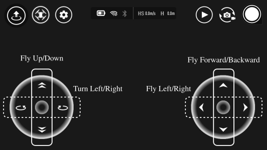
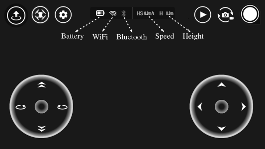
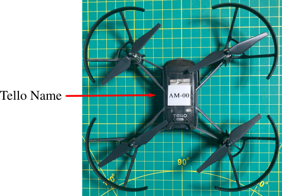
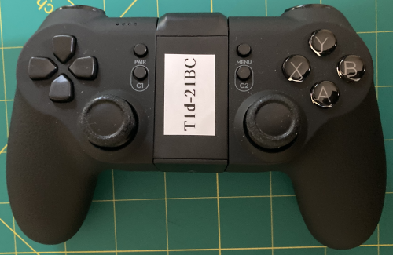

Manually Flying
1 Safety Guidelines
In general, the Tello is safe to fly with its propeller guards firmly attached, as these guards, for the most part, minimize the possibility of the propellers touching you or any object. In addition to propeller guards, the Tello has crash detection capabilities, and it automatically shuts off if its motion is impeded. The use of propeller guards and automatic crash detection, coupled with the Tello’s light weight, makes it generally safe to fly.
However, since the propeller guards are not full-proof and will not prevent eye injury, you must wear eye protection (either eyeglasses or safety goggles) at all times. In addition to always wearing eye protection, you also must adhere to the following safety guidelines:
Caution
Always wear safety glasses when near a flying Tello.
Always fly your Tello with propeller guards, either the standard guards or the CYNOVA propeller cage.
Do not touch rotating propellers.
Always fly your Tello in the designated areas.
Always keep alert and mindful of others when flying your Tello.
Always keep your Tello within visual sight. For instance, never fly your Tello behind objects that block direct sight of your Tello’s location.
Do not answer incoming calls or text messages or do anything that may distract you while flying your Tello.
Do not fly above reflective surfaces as this may affect the performance of the Vision Positioning System (camera and IR sensor located on the bottom of the Tello).
The batteries get hot when flying your Tello, so take care when touching them or the bottom of your Tello.
When a low battery warning is displayed in the Tello app, land the aircraft promptly.
If a critical warning appears, land your Tello immediately.
If a motor is stuck and unable to rotate freely, land the Tello immediately.
If your Tello crashes or has a violent impact, make sure to carefully check every component before flying again (especially the propellers and propeller guards).
If your Tello sustains damage to its propellers, propeller guards, or frame, please inform your instructor.
If anything doesn’t seem right about your Tello, your Tello makes a strang noise or it isn’t flying properly, please inform your instructor.
Attention
Please indicate that you have read and accept the above safety guidelines by submitting the form on this link.
Note
Failure to follow these guidelines may restrict or prohibit your use of the Tello drones in 16.633.
Attention
You can download the entire Tello Disclaimer and Safety Guidelines by clicking this link.
2 Install Tello app

To manually fly the Tello, you must install the Tello app (not the Tello Edu app) on your MacOS or Android enabled mobile device with touch screen and WiFi capabilities.
Note
Please don’t confuse the Tello app with the Tello Edu app (see icon images above). Although both apps allow you to manually fly the Tello, the Tello app is more appropriate for our purposes.
- MacOS
⟹ visit the App Store on your mobile device to download the Tello app (MacOS) (operating system compatibility: iOS v9.0 or later).
- Android
⟹ visit the Google Play Store on your mobile device to download the Tello app (Android) (operating system compatibility: Android v4.4 or later).
Once you have installed the Tello app on your mobile device, you can fly the Tello with your device’s touch screen or with the joysticks on the T1d GameSir controller. For this exercise, you will fly the Tello using both approaches.
Before flying the Tello, you should familarize yourself with the following features of the Tello app:
Joystick Controls
Telemetry
Auto Flight
Settings
Playback/Photo/Video
2.1 Joystick Controls
{kind=link}
Left Joystick: Fly Up/Down
Left Joystick: Turn Left/Right
Right Joystick: Fly Forward/Backward
Right Joystick: Fly Left/Right
Note
If the joystick controls on your screen appear different than those given above, you may need to change the “Stick Mode” settings. If you have any questions about how to change this setting, please see your instructor.
2.2 Telemetry
{kind=link}
2.3 Auto Flight

2.4 Settings

2.5 Playback/Photo/Video

3 Tello Name
{kind=link}
Your Tello has a WiFi name (TELLO-AM-XX) that you must use when connecting with your mobile device. This WiFi name consists of the characters “TELLO-” and the characters “AM-XX” which you’ll find on top of your Tello as illustrated above.
Note
For our purposes, AM-XX is your Tello’s name, but you’ll see TELLO-AM-XX in your WiFi settings. If the label with your Tello’s name is damaged or missing, please inform your instructor.
For reference, your Tello may have any one of the following WiFi names:
TELLO-AM-01 |
TELLO-AM-07 |
TELLO-AM-02 |
TELLO-AM-08 |
TELLO-AM-03 |
TELLO-AM-09 |
TELLO-AM-04 |
TELLO-AM-10 |
TELLO-AM-05 |
TELLO-AM-11 |
TELLO-AM-06 |
TELLO-AM-12 |
4 Pre-Flight Checklist
\(\checkmark\) Ensure the remote control device, mobile device, and flight battery are fully charged.
\(\checkmark\) Ensure the flight battery is mounted firmly.
\(\checkmark\) Ensure the propellers and propeller guards are in good condition and securely mounted and tightened.
\(\checkmark\) Ensure there is nothing obstructing the motors and the motors are functioning normally.
\(\checkmark\) Make sure the camera lens and Vision Positioning System sensors are clean.
\(\checkmark\) If prompted, follow the on-screen instructions to calibrate the Inertial Measurement Unit (IMU).
5 Flying with your Mobile Device
- Step 1
Make sure your Tello has a fully charged battery, and also make sure your mobile device has been sufficiently charged.
- Step 2
Turn on your Tello by pressing the power button. On a fully charged battery, your Tello status indicator should flash the following sequence:
Green - 1x
Red - 5x
Green-White - 1x
Red-Green-Yellow - 3x
Once this sequence has completed, your Tello should flash yellow (quickly), and during this period you can connect to your Tello via WiFi.
- Step 3
Place your Tello on a flat surface.
- Step 4
Open Settings on your mobile device and the click the WiFi tab.
- Step 5
Under Networks, you will see the available WiFi devices in your area. Select the network under your Tello’s WiFi name (Tello-AM-XX).
Caution
Make sure to connect to your specific Tello, as connecting to another Tello may cause physical harm to yourself or to the user of the other Tello.
- Step 6
Now open the Tello app. Once open, the status indicator should flash green (slowly) and the live camera view should appear on your mobile device’s screen.
Attention
If the view you see isn’t the actual view from your Tello’s camera, then its the view of someone else’s Tello. If this case arises, immediately close the Tello app and return to Step 4 above.
- Step 7
Press the Auto Takeoff and Land button and a pop-up screen will appear. In this screen, slide the bar to the right for auto take off. Your Tello should take off upward to approximately 1 meter above the take off location, and it should hover with little movement. If your Tello drifts to the side, we may need to recalibrate its IMU. Please see your instructor if this happens.

Note
If your Tello drifts from side-to-side, you may need to use a non-reflective surface such as a tarp, or you may need to recalibrate the IMU. If you haven’t already learned how to calibrate the IMU, please see your instructor.
- Step 8
Use the joysticks on your mobile device to fly your Tello. Follow all the safety guidelines and enjoy!!!
6 Flying with the T1d Controller
6.1 Controller Overview

The T1d controller by GameSir has been designed specifically for the Tello drone, and it connects to your mobile device via Bluetooth 4.0. It works with Apple devices (version IOS8.0 or above) and Android devices (version 4.3 or above). The T1d automatically identifies whether it is connected to an Apple or Android device, so you do not need to manually set this parameter.
As illustrated in the image above, the T1d has several dedicated buttons plus several customizable buttons. For this portion of your flying excercise, you should first become familiar with the location/functionality of the following buttons as well as the location of the charging port:
power button
charging port
power display
left joystick, and
right joystick.

Note
Click you can click this link to download the T1d operating manual.
6.2 Bluetooth Name
{kind=link}
Each T1d controller has a unique Bluetooth name, such as GameSir-T1d-XXXX. As illustrated above, the controller’s Bluetooth name its located on top of the cell phone carrier.
For reference, your controller may have any one of the following Bluetooth names:
Gamesir-T1d-22A8 |
Gamesir-T1d-236A |
Gamesir-T1d-22A9 |
Gamesir-T1d-236C |
Gamesir-T1d-22B0 |
Gamesir-T1d-23E6 |
Gamesir-T1d-22B2 |
Gamesir-T1d-23EA |
Gamesir-T1d-22B4 |
Gamesir-T1d-23EE |
Gamesir-T1d-235E |
Gamesir-T1d-23F1 |
Note
If your controller does not have a label, please inform your instructor.
6.3 Connect Mobile Device to Controller
First, note your T1d controller’s Bluetooth name.
Next, enable Bluetooth on your mobile device.
Press the power button on the T1d for about 1 second to turn it on. If successful, the blue power display LEDs should flash, and the X-Y-A-B buttons should light up.
Open the Tello app.
Press the Settings button on the Tello app control console.
Open up the Bluetooth Controller Settings.
In the list of T1d controllers, select your T1d controller.
After successfully connecting, the power display LEDs should stop flashing and they should remain lit.
Now you need to connect your mobile device to your Tello.
6.4 Connecting Mobile Device to Tello
Follow the steps listed in Section 5 to connect your mobile device to your Tello.
Once connected, you can now fly your Tello with the T1d controller. You can automatically take off and automatically land by simultaneously pressing the R2+Y buttons on the T1d controller. Enjoy!!!